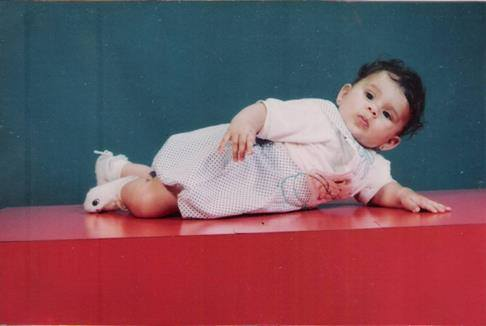
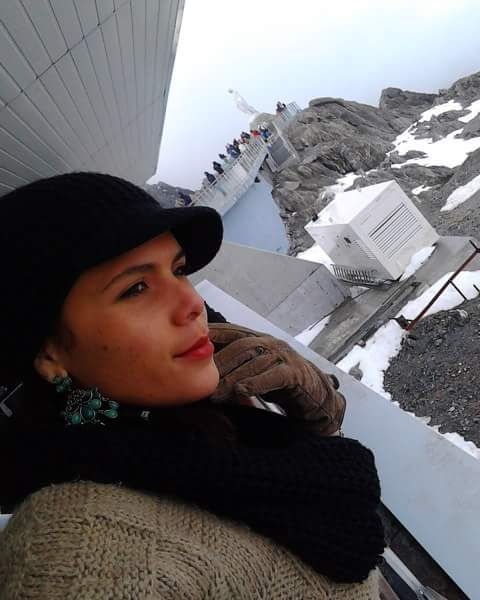

¡Feliz cumpleaños, mi vida! Hoy abrazas los 36 años y yo celebro el momento exacto en que me hiciste padre por primera vez. Esa bendición cambió mi mundo para siempre y, aunque hoy parezca que fue ayer cuando te sostenía entre mis manos, me llena de orgullo ver la mujer tan íntegra, fuerte y dueña de su propio destino en la que te has convertido.
Hoy nos separan 3,325 kilómetros (2,077 millas), una distancia física que a veces encoge el corazón. Sin embargo, no hay un solo mapa ni frontera que pueda enfriar este amor incondicional.
Cuando la nostalgia aprieta, cierro los ojos y vuelvo siempre al mismo refugio: esos primeros tres años de vida donde dormiste sobre mi pecho todos y cada uno de tus días. Siento aún tu respiración tranquila y ese lazo indestructible que se selló para siempre entre nosotros.
Aquella niña que dormía en mis brazos es hoy la mujer valiente que camina con paso firme por el mundo. Los 36 son una edad hermosa: tienes la juventud para comerte el mundo y la experiencia para saber qué batallas vale la pena luchar.
Aunque hoy no pueda darte ese abrazo apretado que tanto deseo, recuerda que mi corazón late contigo a cada segundo, enviándote todo el éxito, la salud y la paz que te mereces. Disfruta tu día y sigue brillando con esa luz propia que nadie puede apagar.